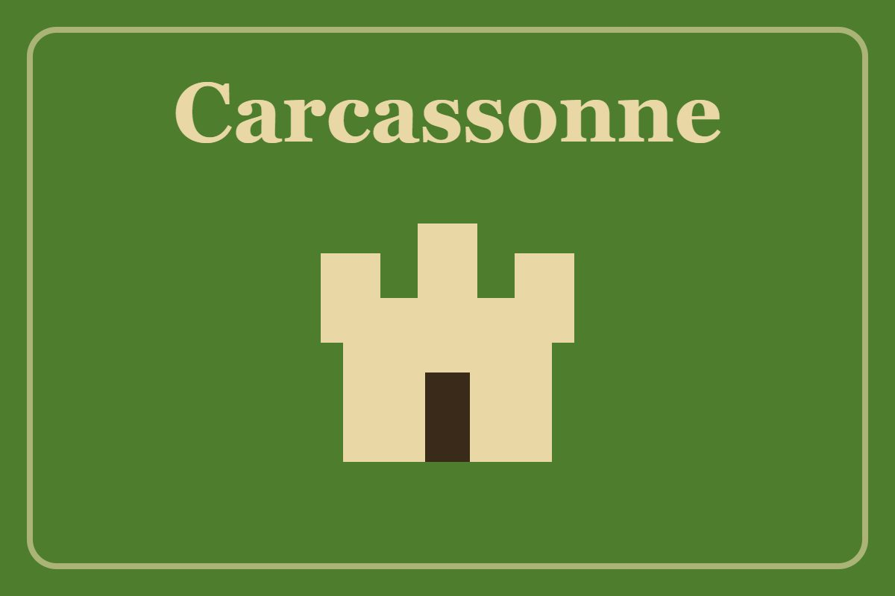
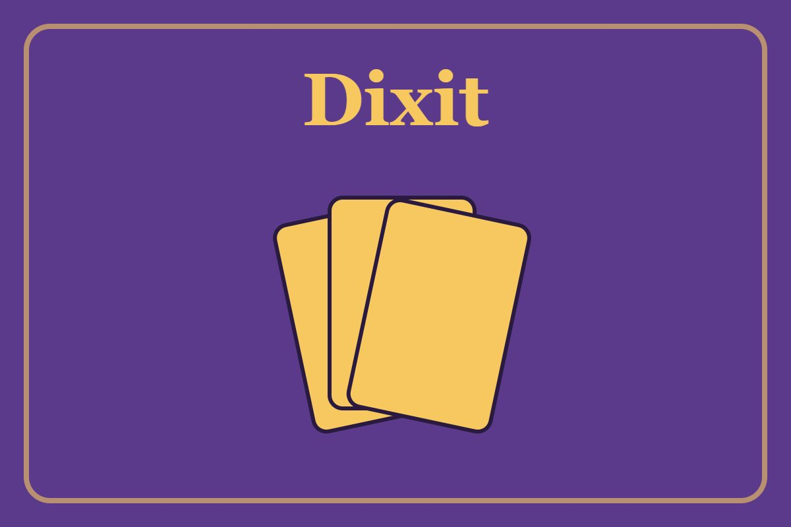
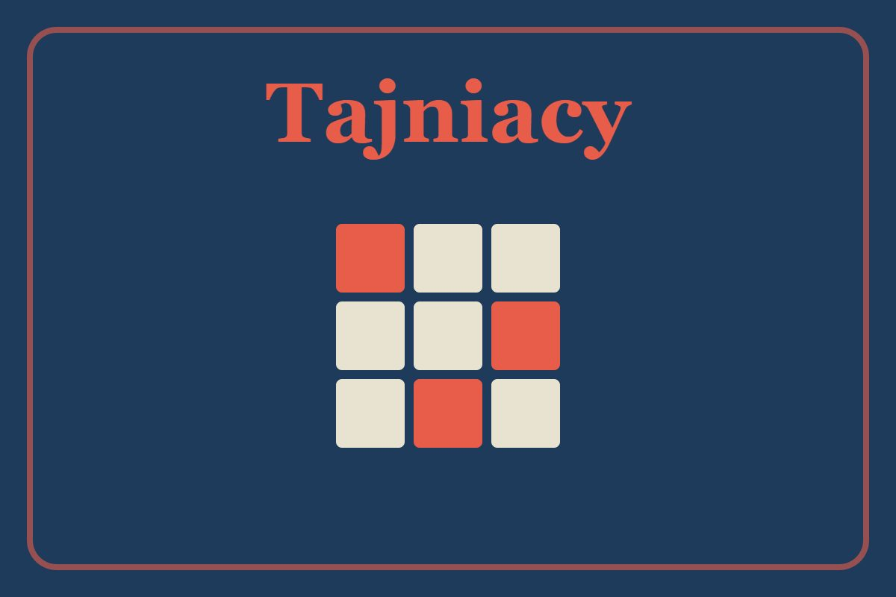
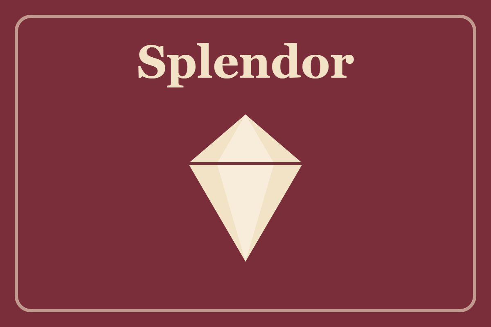

Carcassonne

Budujecie wspólną krainę z kafelków i zajmujecie miasta, drogi oraz klasztory.
- gracze: 2-5
- czas gry: 40 minut
- wiek: od 7 lat
Wybraliśmy kilka tytułów, od których najczęściej zaczynają nowi goście. Pozostałe gry pokaże Ci obsługa przy barze.

Budujecie wspólną krainę z kafelków i zajmujecie miasta, drogi oraz klasztory.

Opowiadasz o obrazku jednym zdaniem, a inni zgadują, którą kartę masz na myśli.

Dwie drużyny, jedno słowo podpowiedzi i siatka 25 kart. Kto pierwszy odnajdzie swoich agentów?

Zbierasz klejnoty, kupujesz kopalnie i przyciągasz arystokratów. Prosta, ale bardzo wciągająca.

Gra kooperacyjna: wszyscy razem walczycie z czterema chorobami, zanim opanują świat.

Gra detektywistyczna, w której wcielamy się w rolę śledczego badającego tajemnicze zbrodnie.